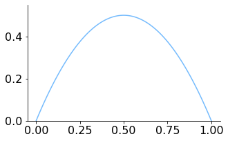
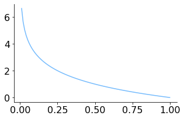
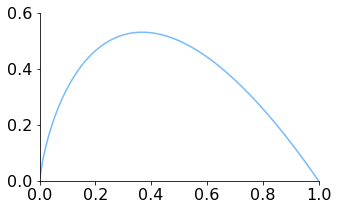
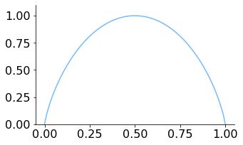
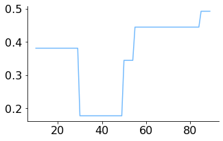
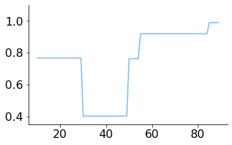

Indici di eterogeneità
Contents
7.5. Indici di eterogeneità¶
Nel caso di variabili qualitative nominali la varianza e gli altri indici da essa derivati non si possono calcolare (infatti non sono calcolabili la media né la mediana né altri valori numerici di riferimento dai quali calcolare le distanze). È comunque necessario avere un indice che misuri la dispersione della distribuzione delle frequenze, detta eterogeneità. In particolare diremo che una variabile si distribuisce in modo eterogeneo se ogni suo valore si presenta con la stessa frequenza.
7.5.1. Indice di eterogeneità di Gini¶
Dato un campione \(\{ a_1, \dots, a_n \}\) in cui occorrono i valori distinti \(v_1, \dots, v_s\) e indicando con \(f_i\) la frequenza relativa dell’elemento \(v_i\) per \(i = 1, \dots, s\), la quantità
è detta indice di eterogeneità di Gini. Si noti che:
\(0 \leq I < 1\), in quanto:
per almeno un \(j\) si ha \(f_j^2 > 0\) e quindi \(\sum f_i^2 > 0\), il che implica \(I < 1\);
per ogni \(i\) si ha \(f_i^2 \leq f_i\) essendo \(0 \leq f_i \leq 1\), e dunque \(\sum f_i^2 \leq \sum f_i = 1\), il che implica \( I \geq 0\);
in caso di eterogeneità minima (o massima omogeneità), tutti gli elementi del campione assumono lo stesso valore, dunque esiste un solo \(j\) per cui \(f_j = 1\) e per ogni \(i \neq j\) si ha \(f_i = 0\), pertanto \(I = 1 - 1 = 0\);
in caso di eterogeneità massima tutte le osservazioni hanno invece la medesima frequenza \(f_i = \frac{1}{s}\), e quindi \(I = 1 - \frac{1}{s} = \frac{s-1}{s}\).
Nel caso in cui si voglia operare con un indice che assuma valori tra \(0\) e \(1\), è possibile dividere l’indice di Gini per il valore massimo \(\frac{s-1}{s}\), ottenendo il cosiddetto indice di Gini normalizzato:
Consideriamo il grafico seguente, che traccia l’andamento dell’indice di Gini nel caso di due valori distinti \(v_1\) e \(v_2\), di cui indicheremo rispettivamente con \(f\) e \(1-f\) le frequenze relative.
import numpy as np
import matplotlib.pyplot as plt
from scipy.constants import golden
plt.style.use('sds.mplstyle')
plt.rc('figure', figsize=(5.0, 5.0/golden))
def gini_2_val(f):
return 1 - f**2 - (1-f)**2
x = np.arange(0, 1.01, .01)
y = list(map(gini_2_val, x))
plt.plot(x, y)
plt.ylim((0, 0.55))
plt.show()

Il grafico evidenzia come non solo l’indice di Gini assuma valori minimo e massimo rispettivamente in corrispondenza delle situazioni di minima e massima eterogeneità nel campione, ma effettivamente si abbia una crescita graduale del valore dell’indice man mano che l’eterogeneità nel campione aumenta, seguita da una sua riduzione man mano che questa ritorna a diminuire. In altre parole, questo indice cattura effettivamente il concetto di eterogeneità traducendolo in una quantità numerica.
Per calcolare il valore dell’indice di Gini per i dati contenuti in una serie è
necessario calcolare le corrispondenti frequenze relative tramite
value_counts; per elevare queste ultime al quadrato risulta utile invocare
sulla serie delle frequenze il metodo map e poi sommare i valori ottenuti e
sottrarre da 1 il risultato.
def gini(series):
return 1 - (sum(series.value_counts(normalize=True)
.map(lambda f: f**2)))
Possiamo quindi utilizzare la funzione gini per valutare l’eterogeneità dei
valori assunti dagli attributi Publisher (limitatamente a 'Marvel Comics' e
'DC Comics') Eye color, Hair color (senza considerare in entrambi i casi
i valori mancanti) e per i nomi dei supereroi (ottenuti a partire dall’indice
del dataframe).
import pandas as pd
heroes = pd.read_csv('data/heroes.csv', sep=';', index_col=0)
publisher = heroes[heroes['Publisher'].isin(['Marvel Comics',
'DC Comics'])]['Publisher']
eye_color = heroes[pd.notnull(heroes['Eye color'])]['Eye color']
hair_color = heroes[pd.notnull(heroes['Hair color'])]['Hair color']
print(gini(publisher))
print(gini(eye_color))
print(gini(hair_color))
print(gini(heroes.index))
0.45945353273979217
0.77232789326401
0.8370723950922644
0.9985654125595816
I risultati ottenuti ci dicono che l’attributo più omogeneo tra quelli considerati è quello relativo all’editore: ciò è dvuto al fatto che sono stati considerati solamente i due editori con il maggior numero di valori. Il nome dei supereroi risulta invece l’attributo più eterogeneo, e anche in questo caso si tratta di un risultato che ci potevamo aspettare, in quanto è ragionevole supporre che i valori assunti dal nome siano univoci. Per avere un quadro più preciso, calcoliamo anche la variante normalizzata dell’indice:
def generalized_gini(series):
freq = series.value_counts(normalize=True)
s = len(freq)
return (1 - (sum(freq.map(lambda f: f**2)))) * s / (s-1)
print(generalized_gini(publisher))
print(generalized_gini(eye_color))
print(generalized_gini(hair_color))
print(generalized_gini(heroes.index))
0.9189070654795843
0.8059073668841843
0.866967837774131
0.9999600569905307
7.5.2. Entropia¶
Dato un campione \(\{ a_1, \dots, a_n \}\) in cui occorrono i valori distinti \(v_1, \dots, v_s\) e indicando con \(f_i\) la frequenza relativa dell’elemento \(v_i\) per \(i = 1, \dots, s\), la quantità
è detta indice di entropia del campione.
La funzione \(p \mapsto \log \frac{1}{p}\) è detta autoinformazione, e il suo andamento in \((0,1]\) è il seguente
x = np.arange(0.01, 1.01, 0.01)
y = list(map(lambda f: -1 * np.log2(f), x))
plt.plot(x, y)
plt.show()

In particolare la funzione vale \(0\) quando \(p=1\) e tende a infinito per \(p\) che tende a \(0\). Il grafico dell’andamento di un generico addendo dell’entropia è il seguente.
x = np.arange(0.001, 1.01, 0.01)
y = list(map(lambda f: -f * np.log2(f), x))
plt.plot(x, y)
plt.ylim(0, 0.6)
plt.xlim(0, 1)
plt.show()

Il risultato ottenuto evidenzia come si possa estendere la definizione del generico addendo anche per \(f_i = 0\), ponendolo uguale a \(1\). Valgono inoltre le osservazioni che seguono.
Per ogni \(i\) vale \(- f_i \log f_i \geq 0\), dunque \(H \geq 0\).
Per ogni \(i\) vale \(- f_i \log f_i = 0\) se e solo se \(f_i = 0\) oppure \(f_i = 1\), pertanto \(H = 0\) se e solo se ci si trova in condizione di massima omogeneità (e cioè tutti gli elementi del campione assumono lo stesso valore).
In caso invece di massima eterogeneità si avrà \(f_i=\frac{1}{s}\) e quindi \(H = \log s\), e si può dimostrare che in tal caso l’entropia assume il valore massimo.
Si può pertanto definire l’indice di entropia normalizzato
i cui valori variano tra \(0\) e \(1\). Se il logaritmo è in base \(2\) (come nel codice che abbiamo scritto) allora l’entropia si misura in bit; è però possibile usare altre basi: per esempio, il logaritmo naturale e quello in base 10 corrispondono rispettivamente a due unità chiamate nat e hartley.
Analogamente a quanto visto per l’indice di Gini, è possibile visualizzare l’andamento dell’entropia nel caso di due valori possibili, mettendo in evidenza che anche questo indice tende ad aumentare all’aumentare dell’eterogeneità e a diminuire al diminuire di quest’ultima.
def entropy_2_val(f):
return 0 if f in (0, 1) else - f * np.log2(f) - (1-f) * np.log2(1-f)
x = np.arange(0, 1.01, .01)
y = list(map(entropy_2_val, x))
plt.plot(x, y)
plt.ylim((0, 1.1))
plt.show()

Calcolando il valore dell’entropia per gli attributi precedentemente considerati si verifica come non cambi il loro rapporto relativo in termini di eterogeneità.
def entropy(series):
return sum((series.value_counts(normalize=True)
.map(lambda f: -f * np.log2(f))))
print(entropy(publisher))
print(entropy(eye_color))
print(entropy(hair_color))
print(entropy(heroes.index))
0.9406863895967433
2.7454093094041547
3.1308603347354245
9.470566732235026
Come nel caso precedente, calcoliamo anche la variante normalizzata dell’indice.
def entropy(series, normalized=False):
freq = series.value_counts(normalize=True)
e = sum((freq.map(lambda f: -f * np.log2(f))))
if normalized:
e /= np.log2(len(freq))
return e
print(entropy(publisher, normalized=True))
print(entropy(eye_color, normalized=True))
print(entropy(hair_color, normalized=True))
print(entropy(heroes.index, normalized=True))
0.9406863895967433
0.5987855536380803
0.6444776827813027
0.9983910129552006
7.5.3. Alberi di decisione¶
Gli indici di eterogeneità sono alla base della costruzione di un interessante classificatore chiamato albero di decisione. Un albero di decisione assegna oggetti a classi, dove un oggetto è descritto tramite un’osservazione che consiste, al solito, in un vettore di valori per degli attributi prefissati. Il procedimento di classificazione procede nel modo seguente: si considera la radice dell’albero, cioè l’unico nodo a cui non arrivano frecce (disposto di solito in alto nella rappresentazione dell’albero), e che è contrassegnato da una condizione che coinvolge i valori di uno o più attributi per l’oggetto che si vuole classificare. A seconda del valore di questa condizione, si percorre una delle due frecce partenti dalla radice. Se il nodo a cui si arriva è un nodo terminale (una foglia da cui non dipartono nuove frecce), in tale nodo è indicata la classe assegnata all’oggetto, altrimenti il nodo riporta un’altra condizione da valutare, iterando il comportamento precedente fino a che non si raggiunge una foglia e quindi si determina una classe per l’oggetto.
Consideriamo per esempio l’albero riportato qui sotto, che fa riferimento a un dataset molto semplice che in funzione delle condizioni meteorologiche permette di capire se si può uscire a giocare. La radice richiede di iniziare valutando che tempo fa (attributo Outlook): se è nuvoloso (overcast) si arriva a una foglia che dice che si può uscire (Yes); se invece dovesse essere soleggiato viene richiesto di valutare se l’umidità abbia o meno un valore inferiore a 30; nel primo caso si potrebbe uscire, altrimenti no. Il processo di classificazione funziona in modo analogo nel caso di tempo piovoso (rain).
La costruzione di un albero di ricerca richiede innanzitutto di individuare un
indice di eterogeneità. Facciamo un esempio selezioniamo l’indice di Gini e
lavorando solo con due classi: i superori e i supercattivi, che indicheremo
rispettivamente con le etichette good_guy e bad_guy. Il fatto di avere solo
due etichette possibili semplifica notevolmente il calcolo dell’indice: basterà
infatti specificare la frequenza relativa \(f\) di good_guy, così che la
frequenza relativa di bad_guy sarà \(1-f\) e l’indice di Gini assumerà il
valore \(1 - f^2 - (1-f)^2\): potremo quindi riutilizzare la funzione
gini_2_val precedentemente definita.
Per mantenere l’albero di decisione di dimensioni compatte selezioniamo un numero relativamente basso di supererori e supercattivi (la scelta è stata fatta anche in modo da non avere a che fare con valori mancanti, che avrebbero complicato il processo di calcolo dell’albero).
good_guys = heroes.loc[['Wonder Woman',
'Aquaman',
'Cyborg',
'Flash II']]
bad_guys = heroes.loc[['Black Manta',
'Penguin',
'Joker',
'Deathstroke',
'Bizarro']]
all_guys = pd.concat([good_guys, bad_guys])
Estraiamo dal dataframe ottenuto gli attributi corrispondenti ad altezza, peso, genere, anno di prima apparizione, colore di occhi e capelli, forza e intelligenza, in quanto i rimanenti attributi sono o identici per tutti i casi selezionati o rappresentano valori univoci.
features = ['Height', 'Weight', 'Gender', 'First appearance',
'Hair color', 'Eye color', 'Strength', 'Intelligence']
X = all_guys[features]
Il risultato, memorizzato in X, è visualizzato qui sotto.
X
| Height | Weight | Gender | First appearance | Hair color | Eye color | Strength | Intelligence | |
|---|---|---|---|---|---|---|---|---|
| Name | ||||||||
| Wonder Woman | 183.13 | 74.74 | F | 1941.0 | Black | Blue | 100.0 | high |
| Aquaman | 185.71 | 146.96 | M | 1941.0 | Blond | Blue | 85.0 | high |
| Cyborg | 198.12 | 173.81 | M | 1980.0 | Black | Brown | 55.0 | good |
| Flash II | 183.41 | 88.32 | M | 1956.0 | Blond | Blue | 50.0 | high |
| Black Manta | 188.12 | 92.78 | M | 1967.0 | No Hair | Black | 30.0 | good |
| Penguin | 157.89 | 79.13 | M | 1941.0 | Black | Blue | 10.0 | good |
| Joker | 196.07 | 86.91 | M | 1940.0 | Green | Green | 10.0 | high |
| Deathstroke | 193.87 | 101.98 | M | 1980.0 | White | Blue | 30.0 | good |
| Bizarro | 191.00 | 155.57 | M | 1958.0 | Black | Black | 95.0 | moderate |
In corrispondenza di ogni osservazione in X è poi necessario indicare la
relativa etichetta. Per comodità è meglio organizzare queste etichette in un
dataframe separato che si può costruire facilmente: siccome i primi quattro
elementi di X rappresentano supereroi mentre i rimanenti elementi
rappresentano supercattivi, è sufficiente fondere insieme due dataframe dei
quali il primo contiene tante copie dell’etichetta good_guy quanti sono i
supereroi e il secondo è costruito in modo analogo ma considerando i
supercattivi.
Y = pd.concat([pd.DataFrame(['good guy'] * len(good_guys),
index=good_guys.index),
pd.DataFrame(['bad guy'] * len(bad_guys),
index=bad_guys.index)])
Ora che abbiamo organizzato i dati a disposizione, è necessario decidere la condizione da inserire nella radice dell’albero. La scelta viene fatta considerando una serie di possibili condizioni, valutando per ognuna il modo in cui i dati risulterebbero suddivisi nei due nodi sottostanti la radice. Consideriamo, per esempio, una condizione che valuti se l’attributo Strength assume un valore minore o uguale a 40 e visualizziamo le etichette delle osservazioni che soddisfano tale condizione.
Y[X['Strength'] <= 40]
| 0 | |
|---|---|
| Name | |
| Black Manta | bad guy |
| Penguin | bad guy |
| Joker | bad guy |
| Deathstroke | bad guy |
Il risultato è molto interessante in quanto le etichette sono tutte uguali, e quindi l’eventuale nodo successivo nell’albero sarebbe una foglia che etichetta i casi come bad_guy. Le cose cambiano, sebbene poco, se consideriamo le osservazioni che non soddisfano la condizione.
Y[X['Strength'] > 40]
In questo caso infatti vi è un solo caso di bad_guy e tutte le osservazioni
rimanenti sono relative a good_guy. In altre parole, la condizione
considerata è buona in quanto suddivide le osservazioni in due gruppi che
tendono a essere omogenei rispetto all’etichetta assunta. Si può quindi
utilizzare l’indice di Gini per quantificare quanto sia buona l’omogeneità:
più l’indice sarà basso, più le osservazioni saranno omogenee. È dunque
necessario calcolare la frequenza relativa delle due etichette nei due gruppi.
Il calcolo di queste frequenze si può fare invocando value_counts sull’unica
serie dei dataframe coinvolti. Una volta ottenuta la frequenza relativa di
una delle due etichette è poi possibile calcolare il valore dell’indice di
Gini. Per esempio, concentrandosi sul gruppo di casi per cui la forza è minore
o uguale a 40 e ragionando in termini della frequenza di 'bad guy' si
otterrebbe il risultato seguente.
freq = Y[X['Strength'] <= 40][0].value_counts(normalize=True)
freq_bad = freq['bad guy']
gini_left = gini_2_val(freq_bad)
gini_left
0.0
Il valore dell’indice per il rimanente gruppo di casi si ottiene in modo analogo.
freq = Y[X['Strength'] > 40][0].value_counts(normalize=True)
freq_bad = freq['bad guy']
gini_right = gini_2_val(freq_bad)
gini_right
0.31999999999999984
Per combinare insieme i due indici al fine di esprimere in un unico valore l’omogeneità media dei casi suddivisi nei sottogruppi si calcola una loro media, pesata in funzione della numerosità dei sottogruppi stessi.
weight_left = len(Y[X['Strength'] <= 40]) / len(Y)
weight_right = len(Y[X['Strength'] > 40]) / len(Y)
gini_left * weight_left + gini_right * weight_right
0.1777777777777777
Tirando le somme, utilizzando la domanda: “la forza è minore o uguale a 40?” come criterio per la radice dell’albero si otterrebbe una suddivisione dei dati a disposizione in due gruppi con un’eterogeneità media pari a circa 0.17. Possiamo ora mantenere fisso l’attributo e considerare valori diversi per la soglia, al fine di trovare il valore che minimizza l’indice di Gini medio (e quindi corrisponde al caso di migliore omogeneità). Attrezziamoci per effettuare questo calcolo indipendentemente dalla scelta dell’attributo, del valore di soglia e dell’indice di eterogeneità.
def split_value(attribute, value, index):
freq = (Y[X[attribute] <= value])[0].value_counts(normalize=True)
freq_bad = freq['bad guy']
index_left = index(freq_bad)
weight_left = len(Y[X[attribute] <= value]) / len(Y)
freq = (Y[X[attribute] > value])[0].value_counts(normalize=True)
freq_bad = freq['bad guy']
index_right = index(freq_bad)
weight_right = len(Y[X[attribute] > value]) / len(Y)
return index_left * weight_left + index_right * weight_right
Ovviamente utilizzando la funzione split_value otteniamo lo stesso risultato
se riconsideriamo una suddivisione in gruppi basata sulla soglia 40 per la
forza.
split_value('Strength', 40, gini_2_val)
0.1777777777777777
Ora siamo però in grado di effettuare in modo automatico lo stesso calcolo al variare dei possibili valori per la soglia.
x_vals = range(10, 90)
plt.plot(x_vals,
list(map(lambda v: split_value('Strength', v, gini_2_val),
x_vals)))
plt.show()

I risultati ottenuti ci dicono che un qualsiasi valore tra 30 e 49 massimizza l’omogeneità dei due sottogruppi generati. Avremmo ottenuto un risultato simile se come indice di eterogeneità avessimo utilizzato l’entropia.
plt.plot(x_vals,
list(map(lambda v: split_value('Strength', v, entropy_2_val),
x_vals)))
plt.ylim(0.35, 1.1)
plt.show()

Per proseguire con la creazione dell’albero di decisione bisognerebbe applicare
nuovamente il processo di ottimizzazione al gruppo che non ha omogeneità
massima. In realtà esistono già delle implementazioni che si occupano di
costruire gli alberi di decisione: noi faremo riferimento alla libreria
sklearn. Nonostante il calcolo degli indici di eterogeneità si possa
effettuare anche su attributi a valori categorici, questa libreria richiede
che i dati siano espressi utilizzando esclusivamente valori numerici. È dunque
necessario convertire in numeri tutte le etichette categoriche. Questo
procedimento può essere fatto automaticamente utilizzando gli oggetti della
classe LabelEncoder, che una volta creati generano automaticamente il mapping
tra etichette e valori numerici utilizzando il metodo fit a cui viene passato
l’insieme delle osservazioni da convertire.
from sklearn.preprocessing import LabelEncoder
gender_encoder = LabelEncoder()
gender_encoder.fit(all_guys['Gender'])
eye_col_encoder = LabelEncoder()
eye_col_encoder.fit(all_guys['Eye color'])
hair_col_encoder = LabelEncoder()
hair_col_encoder.fit(all_guys['Hair color'])
intelligence_encoder = LabelEncoder()
_ = intelligence_encoder.fit(all_guys['Intelligence'])
Una volta determinato questo mapping, il metodo transform lo utilizza per
convertire la serie corrispondente.
all_guys['Gender'] = gender_encoder.transform(all_guys['Gender'])
all_guys['Eye color'] = eye_col_encoder.transform(all_guys['Eye color'])
all_guys['Hair color'] = hair_col_encoder.transform(all_guys['Hair color'])
all_guys['Intelligence'] = intelligence_encoder.transform(all_guys['Intelligence'])
Nomenclatura
La cella precedente mostra come sia possibile modificare i contenuti di una colonna in un dataframe. Utilizzando una sintassi analoga è anche possibile aggiungere a un dataframe esistente una o più colonne.
Possiamo ora visualizzare il nuovo dataframe, ora composto solo da valori numerici, limitatamente agli attributi cui siamo interessati.
X = all_guys[features]
X
| Height | Weight | Gender | First appearance | Hair color | Eye color | Strength | Intelligence | |
|---|---|---|---|---|---|---|---|---|
| Name | ||||||||
| Wonder Woman | 183.13 | 74.74 | 0 | 1941.0 | 0 | 1 | 100.0 | 1 |
| Aquaman | 185.71 | 146.96 | 1 | 1941.0 | 1 | 1 | 85.0 | 1 |
| Cyborg | 198.12 | 173.81 | 1 | 1980.0 | 0 | 2 | 55.0 | 0 |
| Flash II | 183.41 | 88.32 | 1 | 1956.0 | 1 | 1 | 50.0 | 1 |
| Black Manta | 188.12 | 92.78 | 1 | 1967.0 | 3 | 0 | 30.0 | 0 |
| Penguin | 157.89 | 79.13 | 1 | 1941.0 | 0 | 1 | 10.0 | 0 |
| Joker | 196.07 | 86.91 | 1 | 1940.0 | 2 | 3 | 10.0 | 1 |
| Deathstroke | 193.87 | 101.98 | 1 | 1980.0 | 4 | 1 | 30.0 | 0 |
| Bizarro | 191.00 | 155.57 | 1 | 1958.0 | 0 | 0 | 95.0 | 2 |
Usando questo dataframe modificato è possibile utilizzare un oggetto della
classe DecisionTreeClassifier per costruire l’albero di decisione, passando
al metodo fit i dataframe che descrivono rispettivamente i supereroi e le
loro etichette.
from sklearn import tree
clf = tree.DecisionTreeClassifier()
clf = clf.fit(X, Y)
Una volta costruito, sull’oggetto corrispondente all’albero è possibile
invocare il metodo predict per verificare quale etichetta venga associata
agli oggetti di partenza.
predictions = clf.predict([X.loc[name] for name in X.index])
predictions
/opt/hostedtoolcache/Python/3.8.12/x64/lib/python3.8/site-packages/sklearn/base.py:450: UserWarning: X does not have valid feature names, but DecisionTreeClassifier was fitted with feature names
warnings.warn(
array(['good guy', 'good guy', 'good guy', 'good guy', 'bad guy',
'bad guy', 'bad guy', 'bad guy', 'bad guy'], dtype=object)
È inoltre possibile visualizzare l’albero di decisione in forma grafica,
utilizzando la libreria graphviz.
import graphviz
graphviz.Source(tree.export_graphviz(clf, out_file=None,
class_names=['bad guy', 'good guy'],
feature_names=features))
---------------------------------------------------------------------------
FileNotFoundError Traceback (most recent call last)
File /opt/hostedtoolcache/Python/3.8.12/x64/lib/python3.8/site-packages/graphviz/backend/execute.py:83, in run_check(cmd, input_lines, encoding, capture_output, quiet, **kwargs)
82 assert iter(input_lines) is input_lines
---> 83 proc = _run_input_lines(cmd, input_lines, kwargs=kwargs)
84 else:
File /opt/hostedtoolcache/Python/3.8.12/x64/lib/python3.8/site-packages/graphviz/backend/execute.py:103, in _run_input_lines(cmd, input_lines, kwargs)
102 def _run_input_lines(cmd, input_lines, *, kwargs):
--> 103 popen = subprocess.Popen(cmd, stdin=subprocess.PIPE, **kwargs)
105 stdin_write = popen.stdin.write
File /opt/hostedtoolcache/Python/3.8.12/x64/lib/python3.8/subprocess.py:858, in Popen.__init__(self, args, bufsize, executable, stdin, stdout, stderr, preexec_fn, close_fds, shell, cwd, env, universal_newlines, startupinfo, creationflags, restore_signals, start_new_session, pass_fds, encoding, errors, text)
855 self.stderr = io.TextIOWrapper(self.stderr,
856 encoding=encoding, errors=errors)
--> 858 self._execute_child(args, executable, preexec_fn, close_fds,
859 pass_fds, cwd, env,
860 startupinfo, creationflags, shell,
861 p2cread, p2cwrite,
862 c2pread, c2pwrite,
863 errread, errwrite,
864 restore_signals, start_new_session)
865 except:
866 # Cleanup if the child failed starting.
File /opt/hostedtoolcache/Python/3.8.12/x64/lib/python3.8/subprocess.py:1704, in Popen._execute_child(self, args, executable, preexec_fn, close_fds, pass_fds, cwd, env, startupinfo, creationflags, shell, p2cread, p2cwrite, c2pread, c2pwrite, errread, errwrite, restore_signals, start_new_session)
1703 err_msg = os.strerror(errno_num)
-> 1704 raise child_exception_type(errno_num, err_msg, err_filename)
1705 raise child_exception_type(err_msg)
FileNotFoundError: [Errno 2] No such file or directory: PosixPath('dot')
The above exception was the direct cause of the following exception:
ExecutableNotFound Traceback (most recent call last)
File /opt/hostedtoolcache/Python/3.8.12/x64/lib/python3.8/site-packages/IPython/core/formatters.py:973, in MimeBundleFormatter.__call__(self, obj, include, exclude)
970 method = get_real_method(obj, self.print_method)
972 if method is not None:
--> 973 return method(include=include, exclude=exclude)
974 return None
975 else:
File /opt/hostedtoolcache/Python/3.8.12/x64/lib/python3.8/site-packages/graphviz/jupyter_integration.py:98, in JupyterIntegration._repr_mimebundle_(self, include, exclude, **_)
96 include = set(include) if include is not None else {self._jupyter_mimetype}
97 include -= set(exclude or [])
---> 98 return {mimetype: getattr(self, method_name)()
99 for mimetype, method_name in MIME_TYPES.items()
100 if mimetype in include}
File /opt/hostedtoolcache/Python/3.8.12/x64/lib/python3.8/site-packages/graphviz/jupyter_integration.py:98, in <dictcomp>(.0)
96 include = set(include) if include is not None else {self._jupyter_mimetype}
97 include -= set(exclude or [])
---> 98 return {mimetype: getattr(self, method_name)()
99 for mimetype, method_name in MIME_TYPES.items()
100 if mimetype in include}
File /opt/hostedtoolcache/Python/3.8.12/x64/lib/python3.8/site-packages/graphviz/jupyter_integration.py:112, in JupyterIntegration._repr_image_svg_xml(self)
110 def _repr_image_svg_xml(self) -> str:
111 """Return the rendered graph as SVG string."""
--> 112 return self.pipe(format='svg', encoding=SVG_ENCODING)
File /opt/hostedtoolcache/Python/3.8.12/x64/lib/python3.8/site-packages/graphviz/piping.py:99, in Pipe.pipe(self, format, renderer, formatter, quiet, engine, encoding)
52 def pipe(self,
53 format: typing.Optional[str] = None,
54 renderer: typing.Optional[str] = None,
(...)
57 engine: typing.Optional[str] = None,
58 encoding: typing.Optional[str] = None) -> typing.Union[bytes, str]:
59 """Return the source piped through the Graphviz layout command.
60
61 Args:
(...)
97 '<?xml version='
98 """
---> 99 return self._pipe_legacy(format,
100 renderer=renderer,
101 formatter=formatter,
102 quiet=quiet,
103 engine=engine,
104 encoding=encoding)
File /opt/hostedtoolcache/Python/3.8.12/x64/lib/python3.8/site-packages/graphviz/_tools.py:172, in deprecate_positional_args.<locals>.decorator.<locals>.wrapper(*args, **kwargs)
163 wanted = ', '.join(f'{name}={value!r}'
164 for name, value in deprecated.items())
165 warnings.warn(f'The signature of {func.__name__} will be reduced'
166 f' to {supported_number} positional args'
167 f' {list(supported)}: pass {wanted}'
168 ' as keyword arg(s)',
169 stacklevel=stacklevel,
170 category=category)
--> 172 return func(*args, **kwargs)
File /opt/hostedtoolcache/Python/3.8.12/x64/lib/python3.8/site-packages/graphviz/piping.py:114, in Pipe._pipe_legacy(self, format, renderer, formatter, quiet, engine, encoding)
106 @_tools.deprecate_positional_args(supported_number=2)
107 def _pipe_legacy(self,
108 format: typing.Optional[str] = None,
(...)
112 engine: typing.Optional[str] = None,
113 encoding: typing.Optional[str] = None) -> typing.Union[bytes, str]:
--> 114 return self._pipe_future(format,
115 renderer=renderer,
116 formatter=formatter,
117 quiet=quiet,
118 engine=engine,
119 encoding=encoding)
File /opt/hostedtoolcache/Python/3.8.12/x64/lib/python3.8/site-packages/graphviz/piping.py:139, in Pipe._pipe_future(self, format, renderer, formatter, quiet, engine, encoding)
136 if encoding is not None:
137 if codecs.lookup(encoding) is codecs.lookup(self.encoding):
138 # common case: both stdin and stdout need the same encoding
--> 139 return self._pipe_lines_string(*args, encoding=encoding, **kwargs)
140 try:
141 raw = self._pipe_lines(*args, input_encoding=self.encoding, **kwargs)
File /opt/hostedtoolcache/Python/3.8.12/x64/lib/python3.8/site-packages/graphviz/backend/piping.py:196, in pipe_lines_string(engine, format, input_lines, encoding, renderer, formatter, quiet)
192 cmd = dot_command.command(engine, format,
193 renderer=renderer, formatter=formatter)
194 kwargs = {'input_lines': input_lines, 'encoding': encoding}
--> 196 proc = execute.run_check(cmd, capture_output=True, quiet=quiet, **kwargs)
197 return proc.stdout
File /opt/hostedtoolcache/Python/3.8.12/x64/lib/python3.8/site-packages/graphviz/backend/execute.py:88, in run_check(cmd, input_lines, encoding, capture_output, quiet, **kwargs)
86 except OSError as e:
87 if e.errno == errno.ENOENT:
---> 88 raise ExecutableNotFound(cmd) from e
89 raise
91 if not quiet and proc.stderr:
ExecutableNotFound: failed to execute PosixPath('dot'), make sure the Graphviz executables are on your systems' PATH
<graphviz.sources.Source at 0x7effe0788b80>
pd.DataFrame(np.array((X.index, Y[0], predictions)))
| 0 | 1 | 2 | 3 | 4 | 5 | 6 | 7 | 8 | |
|---|---|---|---|---|---|---|---|---|---|
| 0 | Wonder Woman | Aquaman | Cyborg | Flash II | Black Manta | Penguin | Joker | Deathstroke | Bizarro |
| 1 | good guy | good guy | good guy | good guy | bad guy | bad guy | bad guy | bad guy | bad guy |
| 2 | good guy | good guy | good guy | good guy | bad guy | bad guy | bad guy | bad guy | bad guy |
Infine, è in teoria possibile utilizzare l’albero ottenuto per ottenere una
classificazione per supereroi non utilizzati per costruire l’albero stesso. Per
far questo è però necessario tradurre i valori categorici in numeri,
riutilizzando i LabelEncoder precedentemente preparati. Per comodità,
costruiamo una funzione che si occupi di effettuare questa trasformazione.
def filter(obj):
transformed_obj = obj['Height':'Intelligence']
transformed_obj['Gender'] = gender_encoder.transform([transformed_obj['Gender']])[0]
transformed_obj['Eye color'] = eye_col_encoder.transform([transformed_obj['Eye color']])[0]
transformed_obj['Hair color'] = hair_col_encoder.transform([transformed_obj['Hair color']])[0]
transformed_obj['Intelligence'] = intelligence_encoder.transform([transformed_obj['Intelligence']])[0]
return transformed_obj
Possiamo quindi trasformare, per esempio, un supereroe e verificare a quale etichetta esso viene associato.
clf.predict([filter(heroes.loc['Professor X'])])
/opt/hostedtoolcache/Python/3.8.12/x64/lib/python3.8/site-packages/sklearn/base.py:450: UserWarning: X does not have valid feature names, but DecisionTreeClassifier was fitted with feature names
warnings.warn(
array(['bad guy'], dtype=object)
Il risultato ottenuto deve metterci in guardia: non necessariamente infatti un buon compoartamento degli alberi di decisione sui dati utilizzati per costruirli è associato a un analogo comportamento nell’indurre etichette per dati nuovi. Le tecniche da utilizzare per valutare la cosiddetta capacità di generalizzazione a nuovi casi esulano però dallo scopo del nostro corso.
In linea di principio gli alberi di decisione si possono costruire utilizzando
un qualsiasi indice che valuti l’eterogeneità: la libreria sklearn supporta la
scelta di questo criterio attraverso l’argomento opzionale criterion passato
al costruttore di DecisionTreeClassifier. Il valore predefinito è 'gini',
corrispondente ovviamente all’indice di Gini, ma è anche possibile specificare
'entropy' nel caso in cui si volesse utilizzare l’entropia. Ovviamente
l’albero ottenuto usando l’entropia non è necessariamente uguale a quello che
si ottiene con l’indice di Gini. Per il nostro esempio, l’unica differenza
risiede nel nodo di scelta al di sotto della radice, che sarebbe basato
sull’attributo “Intelligence” invece che su “Eye color”.
clf = tree.DecisionTreeClassifier(criterion='entropy')
clf = clf.fit(X, Y)
graphviz.Source(tree.export_graphviz(clf, out_file=None,
class_names=['bad guy', 'good guy'],
feature_names=features))
---------------------------------------------------------------------------
FileNotFoundError Traceback (most recent call last)
File /opt/hostedtoolcache/Python/3.8.12/x64/lib/python3.8/site-packages/graphviz/backend/execute.py:83, in run_check(cmd, input_lines, encoding, capture_output, quiet, **kwargs)
82 assert iter(input_lines) is input_lines
---> 83 proc = _run_input_lines(cmd, input_lines, kwargs=kwargs)
84 else:
File /opt/hostedtoolcache/Python/3.8.12/x64/lib/python3.8/site-packages/graphviz/backend/execute.py:103, in _run_input_lines(cmd, input_lines, kwargs)
102 def _run_input_lines(cmd, input_lines, *, kwargs):
--> 103 popen = subprocess.Popen(cmd, stdin=subprocess.PIPE, **kwargs)
105 stdin_write = popen.stdin.write
File /opt/hostedtoolcache/Python/3.8.12/x64/lib/python3.8/subprocess.py:858, in Popen.__init__(self, args, bufsize, executable, stdin, stdout, stderr, preexec_fn, close_fds, shell, cwd, env, universal_newlines, startupinfo, creationflags, restore_signals, start_new_session, pass_fds, encoding, errors, text)
855 self.stderr = io.TextIOWrapper(self.stderr,
856 encoding=encoding, errors=errors)
--> 858 self._execute_child(args, executable, preexec_fn, close_fds,
859 pass_fds, cwd, env,
860 startupinfo, creationflags, shell,
861 p2cread, p2cwrite,
862 c2pread, c2pwrite,
863 errread, errwrite,
864 restore_signals, start_new_session)
865 except:
866 # Cleanup if the child failed starting.
File /opt/hostedtoolcache/Python/3.8.12/x64/lib/python3.8/subprocess.py:1704, in Popen._execute_child(self, args, executable, preexec_fn, close_fds, pass_fds, cwd, env, startupinfo, creationflags, shell, p2cread, p2cwrite, c2pread, c2pwrite, errread, errwrite, restore_signals, start_new_session)
1703 err_msg = os.strerror(errno_num)
-> 1704 raise child_exception_type(errno_num, err_msg, err_filename)
1705 raise child_exception_type(err_msg)
FileNotFoundError: [Errno 2] No such file or directory: PosixPath('dot')
The above exception was the direct cause of the following exception:
ExecutableNotFound Traceback (most recent call last)
File /opt/hostedtoolcache/Python/3.8.12/x64/lib/python3.8/site-packages/IPython/core/formatters.py:973, in MimeBundleFormatter.__call__(self, obj, include, exclude)
970 method = get_real_method(obj, self.print_method)
972 if method is not None:
--> 973 return method(include=include, exclude=exclude)
974 return None
975 else:
File /opt/hostedtoolcache/Python/3.8.12/x64/lib/python3.8/site-packages/graphviz/jupyter_integration.py:98, in JupyterIntegration._repr_mimebundle_(self, include, exclude, **_)
96 include = set(include) if include is not None else {self._jupyter_mimetype}
97 include -= set(exclude or [])
---> 98 return {mimetype: getattr(self, method_name)()
99 for mimetype, method_name in MIME_TYPES.items()
100 if mimetype in include}
File /opt/hostedtoolcache/Python/3.8.12/x64/lib/python3.8/site-packages/graphviz/jupyter_integration.py:98, in <dictcomp>(.0)
96 include = set(include) if include is not None else {self._jupyter_mimetype}
97 include -= set(exclude or [])
---> 98 return {mimetype: getattr(self, method_name)()
99 for mimetype, method_name in MIME_TYPES.items()
100 if mimetype in include}
File /opt/hostedtoolcache/Python/3.8.12/x64/lib/python3.8/site-packages/graphviz/jupyter_integration.py:112, in JupyterIntegration._repr_image_svg_xml(self)
110 def _repr_image_svg_xml(self) -> str:
111 """Return the rendered graph as SVG string."""
--> 112 return self.pipe(format='svg', encoding=SVG_ENCODING)
File /opt/hostedtoolcache/Python/3.8.12/x64/lib/python3.8/site-packages/graphviz/piping.py:99, in Pipe.pipe(self, format, renderer, formatter, quiet, engine, encoding)
52 def pipe(self,
53 format: typing.Optional[str] = None,
54 renderer: typing.Optional[str] = None,
(...)
57 engine: typing.Optional[str] = None,
58 encoding: typing.Optional[str] = None) -> typing.Union[bytes, str]:
59 """Return the source piped through the Graphviz layout command.
60
61 Args:
(...)
97 '<?xml version='
98 """
---> 99 return self._pipe_legacy(format,
100 renderer=renderer,
101 formatter=formatter,
102 quiet=quiet,
103 engine=engine,
104 encoding=encoding)
File /opt/hostedtoolcache/Python/3.8.12/x64/lib/python3.8/site-packages/graphviz/_tools.py:172, in deprecate_positional_args.<locals>.decorator.<locals>.wrapper(*args, **kwargs)
163 wanted = ', '.join(f'{name}={value!r}'
164 for name, value in deprecated.items())
165 warnings.warn(f'The signature of {func.__name__} will be reduced'
166 f' to {supported_number} positional args'
167 f' {list(supported)}: pass {wanted}'
168 ' as keyword arg(s)',
169 stacklevel=stacklevel,
170 category=category)
--> 172 return func(*args, **kwargs)
File /opt/hostedtoolcache/Python/3.8.12/x64/lib/python3.8/site-packages/graphviz/piping.py:114, in Pipe._pipe_legacy(self, format, renderer, formatter, quiet, engine, encoding)
106 @_tools.deprecate_positional_args(supported_number=2)
107 def _pipe_legacy(self,
108 format: typing.Optional[str] = None,
(...)
112 engine: typing.Optional[str] = None,
113 encoding: typing.Optional[str] = None) -> typing.Union[bytes, str]:
--> 114 return self._pipe_future(format,
115 renderer=renderer,
116 formatter=formatter,
117 quiet=quiet,
118 engine=engine,
119 encoding=encoding)
File /opt/hostedtoolcache/Python/3.8.12/x64/lib/python3.8/site-packages/graphviz/piping.py:139, in Pipe._pipe_future(self, format, renderer, formatter, quiet, engine, encoding)
136 if encoding is not None:
137 if codecs.lookup(encoding) is codecs.lookup(self.encoding):
138 # common case: both stdin and stdout need the same encoding
--> 139 return self._pipe_lines_string(*args, encoding=encoding, **kwargs)
140 try:
141 raw = self._pipe_lines(*args, input_encoding=self.encoding, **kwargs)
File /opt/hostedtoolcache/Python/3.8.12/x64/lib/python3.8/site-packages/graphviz/backend/piping.py:196, in pipe_lines_string(engine, format, input_lines, encoding, renderer, formatter, quiet)
192 cmd = dot_command.command(engine, format,
193 renderer=renderer, formatter=formatter)
194 kwargs = {'input_lines': input_lines, 'encoding': encoding}
--> 196 proc = execute.run_check(cmd, capture_output=True, quiet=quiet, **kwargs)
197 return proc.stdout
File /opt/hostedtoolcache/Python/3.8.12/x64/lib/python3.8/site-packages/graphviz/backend/execute.py:88, in run_check(cmd, input_lines, encoding, capture_output, quiet, **kwargs)
86 except OSError as e:
87 if e.errno == errno.ENOENT:
---> 88 raise ExecutableNotFound(cmd) from e
89 raise
91 if not quiet and proc.stderr:
ExecutableNotFound: failed to execute PosixPath('dot'), make sure the Graphviz executables are on your systems' PATH
<graphviz.sources.Source at 0x7effe901d790>